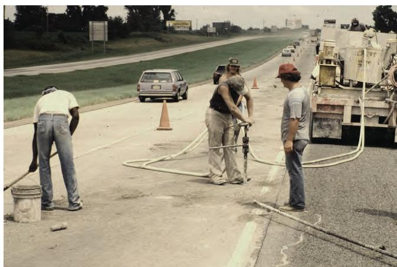
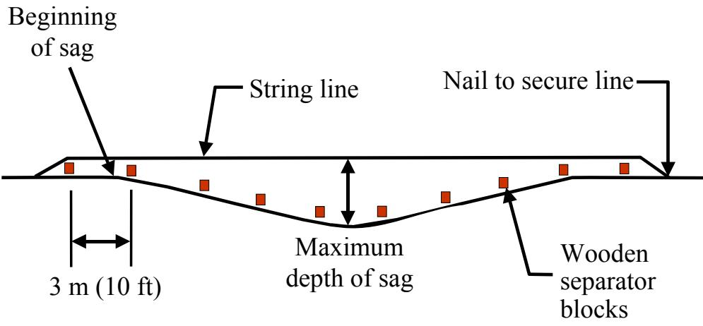
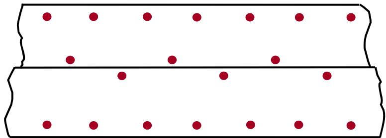
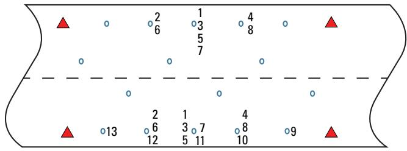

Grout Injection for Slab Stabilization
Grout injection, also called slab jacking, is a remedial treatment used to correct isolated depressions in concrete pavement slabs that have lost support because of underlying voids, typically near fill areas, culverts or bridge approaches【1】. The method restores the slab’s functional condition by pressure‑injecting a certified grout or polyurethane beneath the sound slab, raising the settled area no more than about 0.25 in (6 mm) while maintaining low injection pressures (≈25–200 psi) to reestablish an even profile and proper ride quality【1】【3】. It is applicable only when the slab remains structurally intact, rests on a granular sub‑base, ambient temperature exceeds 40 °F, and traffic can be restricted for at least three hours after placement, ensuring lifts stay within tight elevation tolerances【2】【3】.
Sources (3)
Purpose and treatment objectives
The guides describe grout injection, or slab jacking, as a remedial treatment for concrete pavement slabs that have developed localized settlement or depressions—often manifested as dips in the surface—resulting from loss of support due to underlying voids. These conditions are most commonly observed near fill areas, over culverts, and at bridge approaches, where the surrounding pavement remains structurally sound and generally free of cracking. By pressure‑injecting grout beneath the affected area and carefully limiting the lift (no more than 0.25 in. at any location), the slab is gently raised to reestablish an even profile, restore ride quality, and prevent further stress development. [1][2][3]
The drilling operation shown below is a key step in this process.

Drilling operation as part of slab stabilization [1]The image shows a crew performing a drilling operation on a concrete highway surface, which is the initial step in preparing for material injection. A large truck equipped with pumping machinery and hoses is positioned at the edge of the work zone to supply the grout mixture or polyurethane used in the repair. This procedure restores slab support by filling underlying voids to reestablish an even profile.
[1] — Slab Jacking (p. 76); [2] — Ch. 4 (pp. 83–95); [3] — Ch. 4 (pp. 80–89)
Across the guides, grout injection for slab stabilization—commonly called slab jacking—is described as a method whose primary objective is to restore the slab’s functional condition. By lifting locally settled or depressed areas back to their intended grade, the process re‑establishes a smooth, even profile and returns the pavement or floor to its proper ride quality and service level. [1][2][3]
The following figure illustrates this specific method of slab jacking.

Diagram of the taut stringline method for monitoring slab jacking operations. [3]The figure illustrates a cross-section of pavement showing a depressed area, or sag, bounded by wooden separator blocks and secured with nails at each end. A string line is stretched tautly across the depression to establish a reference grade for monitoring the raising of the slab during grout injection. This setup allows operators to observe the exact amount of rise at each point within the sag and control the pumping process to restore a smooth profile.
[1] — Slab Jacking (p. 76); [2] — Ch. 4 (pp. 89–95); [3] — Ch. 4 (p. 89)
Distress characterization and causes
The distress targeted by grout injection appears as isolated depressions in concrete pavement slabs, most often located near fill areas, over culverts, and at bridge‑approach sections. These depressions are confined to small, localized spots that degrade ride quality while the surrounding slab remains structurally sound, indicating a moderate severity. The guides do not quantify a progression rate; however, they note that untreated loss of smooth ride can affect vehicle operation and safety, and that unchecked settlement threatens slab performance. Operational consequences include the risk of excessive stresses and cracking if lift exceeds 0.25 in., which can compromise safety for heavy‑truck traffic, so lifts are limited and high‑density material is recommended. [1][2]
[1] — Slab Jacking (p. 76); [2] — Ch. 4 (pp. 90–91)
The distress addressed by grout injection arises from loss of adequate support beneath the slab, which manifests as localized settlement where the sub‑base or supporting soil is insufficient—commonly near fill zones, over culverts, and at bridge approaches. Contributing mechanisms include excessive moisture that weakens the base, inadequate load transfer at joints, and poor consolidation of the granular material, all of which reduce bearing capacity. Heavy traffic loads impose additional stresses; when grout density is not sufficiently high for heavily loaded sections (e.g., Interstates with truck traffic), movement and cracking can be re‑initiated. Because these conditions are confined to specific zones, targeted pressurized grout can lift the slab back to grade without correcting broader structural deficiencies, but success depends on confirming a sound subbase and selecting appropriate grout density. [1][2]
[1] — Slab Jacking (p. 76); [2] — Ch. 4 (pp. 89–91)
Applicability and treatment selection
Grout injection for slab stabilization is suitable when the pavement shows localized settlement yet remains largely free of cracking—“Ideal projects for slab jacking are pavements that exhibit localized areas of settlement but are generally free of cracking.” The distressed slab must be structurally sound and rest on a granular sub‑base, as “Polyurethane foams should be injected under structurally sound slabs resting on a granular subbase.” Ambient conditions must permit proper curing; therefore “Slab stabilization should not be performed when the ambient temperature is below 40 °F.” Traffic must be kept off the treated area for at least three hours after grouting, and on high‑traffic Interstates with heavy trucks the material density should be very high—“If polyurethane injection is conducted on Interstates where heavy trucks are expected, the density of the material is recommended to be very high.” [2]
[2] — Ch. 4 (pp. 87–91)
Grout injection (slab jacking) should be avoided when the concrete slab has faulted joints, extensive or widespread settlement, or lacks structural integrity, because the method only corrects isolated depressions and cannot repair joint faults. It is also unsuitable if the required lift exceeds about a quarter of an inch, as the process is limited to raising the slab no more than 0.25 in (6 mm). The technique should not be used when a drilled hole does not accept water, indicating that no void exists beneath the slab; under such circumstances grout injection is unnecessary and another repair method should be pursued. Large spalled pieces on the slab underside can block any void, making grout placement impossible, so an alternative rehabilitation technique must be used. Injection also becomes ineffective if drill downward pressure exceeds 90 kg (200 lb), because excessive force creates conical spalling at the bottom of the slab; in that case a different approach is required. Slab stabilization should not be performed when the ambient temperature is below 40 °F, as low temperatures prevent adequate grout curing and compromise the repair. Unless a fast‑setting material is used, traffic must be kept off a stabilized slab for at least three hours after grouting; otherwise the method cannot be applied under normal traffic constraints. Slabs that are structurally damaged, require lifts greater than about 0.25 in. at any point, or rest on non‑granular or already stabilized foundations generate stresses the injection material cannot safely accommodate. Pavements exhibiting faulted joints, extensive cracking, or settlement caused by underlying problems such as excess moisture, poor load transfer, or inadequate subgrade consolidation are better served by alternative preservation or rehabilitation measures (e.g., diamond grinding, DBR, joint sealing, broader subgrade remediation, or full‑depth slab replacement). [1][2][3]
[1] — Slab Jacking (p. 76); [2] — Ch. 4 (pp. 86–91); [3] — Ch. 4 (pp. 84–85)
Condition assessment and timing
The guides state that determining the need for grout injection starts with a comprehensive visual inspection for localized settlements or depressions. Once suspect areas are identified, their severity is quantified by measuring the slab elevation profile. Methods cited include using a straightedge on isolated faults, a survey rod and level for long‑span dips, and the traditional taut string line (or modern laser level) set at regular intervals across wheel paths, with typical maximum spacing of 5 ft when a laser level is used. Measured elevations are compared to the design grade; any location exceeding allowable tolerance signals treatment.
Before drilling, a detailed ground investigation of the damaged pavement section must be carried out to confirm that the slab is structurally sound and resting on an appropriate granular sub‑base. Clean drill holes are then made with hand‑held or mechanical drills that produce no surface spalling or breakouts on the underside of the slab. After each hole is drilled, a water‑absorption test is performed: water is poured into the fresh hole; if the hole does not take water, there is no void and therefore no need for grout injection, whereas absorption indicates a void and marks the location for treatment.
During the injection phase, flow rate and back‑pressure are monitored. Easy flow permits wider spacing of holes, while rapid pressure buildup or failure to achieve good flow before maximum back pressure is reached signals insufficient coverage and requires reduction of hole spacing. [2][3]
[2] — Ch. 4 (pp. 86–95); [3] — Ch. 4 (p. 84)
The guides advise using grout injection (slab jacking) when a concrete slab is structurally sound but exhibits isolated settlement or depressions—typically near fill areas, culverts, or bridge approaches—and subsurface voids have been identified. Under these conditions the pavement should be generally free of cracking and rest on a granular sub‑base; the slab may then be lifted no more than about a quarter‑inch (6 mm) to reestablish a smooth profile by pressure‑injecting grout beneath it. [1][2][3]
The figure below illustrates the pattern of grout pumping holes used to correct such settlement.

Pattern of grout pumping holes used to correct a settlement. [3]The figure displays a schematic layout of red dots arranged in rows, representing the pattern of grout injection points on a concrete slab.
[1] — Slab Jacking (p. 76); [2] — Ch. 4 (pp. 83–95); [3] — Ch. 4 (p. 89)
Materials and repair details
The performance of grout injection for slab stabilization is governed by three interrelated groups of factors: the properties of the grout or polyurethane material, its compatibility with the existing pavement system, and the condition of that pavement at the time of treatment. Materials must be durable and specifically approved for slab‑jacking applications; The grout mixture or polyurethane used in the repair should be certified for this purpose. They also need a balance of flowability—enough to travel through drilled holes and fill voids without excessive pressure—and sufficient post‑cure strength, often achieved with high‑density foams or slightly stiffer Portland‑cement based mixes that remain uniformly suspended during mixing. Compatibility considerations include selecting the correct grout type for the pavement classification (jointed plain, jointed reinforced, or continuously reinforced concrete), using hole diameters and packers that avoid spalling, and ensuring low injection pressures; Injection pressures are kept low (typically 25–200 psi) and lifts are limited to a quarter‑inch per hole to prevent overstressing the slab. Existing pavement conditions that favor successful treatment are structurally sound slabs with localized settlement, adequate subbase support, no extensive cracking or faulted joints, and ambient temperatures above 40 °F (4 °C). When cracks are present, additional holes may be needed to achieve a uniform lift; A greater number of holes may be required if the slabs are cracked. Adhering to these material, compatibility, and condition requirements yields reliable restoration of uniform support. [1][2][3]
The following figure illustrates typical grout insertion hole patterns used in the slab stabilization of jointed concrete pavements.
 Field application of polyurethane slab stabilization on a concrete highway pavement. [2]
Field application of polyurethane slab stabilization on a concrete highway pavement. [2]
The image depicts a field operation where workers are performing slab stabilization using specialized equipment, including hoses and injection tools connected to a service truck. A worker is kneeling on the pavement surface near white markings that indicate the locations for drilling holes to deliver material into voids beneath the slab.
[1] — Slab Jacking (p. 76); [2] — Ch. 4 (pp. 83–94); [3] — Ch. 4 (pp. 80–89)
Treatment procedures
The procedure begins by locating settlement areas or voids that require treatment. The guides state that “First the settlement locations are carefully identified and a certified grout or polyurethane is selected.” Once the problem zones are known, “After identifying any voids that would benefit from slab stabilization, the next step is to determine the optimal locations of grout insertion holes (i.e., the hole pattern).” Holes are placed within the void but as far from cracks and joints as practicable—“Holes should be placed as far away from nearby cracks and joints as possible, but they should still be within the area of the identified void.”
Drilling is performed with a hand‑held or mechanical drill that produces clean holes without spalling; “Select a hand‑held or mechanical drill that produces clean holes with no surface spalling or breakouts on the underside of the slab; limit the downward pressure on any drill to 90 kg (200 lb) to avoid conical spalling at the bottom of the slab.” The maximum diameter is limited to the grout type (≤0.625 in for polyurethane, 1–2 in for cement‑based grout). Each hole is water‑tested—if water does not enter, the void is absent and the hole may be patched before proceeding.
A positive‑displacement or non‑pulsing progressive‑cavity pump is set up for low‑pressure, low‑flow operation: “Choose a positive‑displacement or non‑pulsing progressive‑cavity pump capable of low‑pressure operation. Set the pump to maintain pressures between 0.15 and 1.4 MPa (25 and 200 lbf/in²) and a low flow rate, ideally about 5.5 L/min.” The grout (certified Portland cement‑based or polyurethane) is mixed and kept in the hopper no longer than one hour.
Injection uses an appropriate packer; “Portland cement‑based grouts are typically injected using a grout packer.” Injection proceeds in very small increments while monitoring uplift: “The grout is injected in controlled increments, raising the slab no more than about a quarter‑inch per pass.” The guides also advise maintaining low rates: “Maintain a low pumping rate (ideally about 1.5 gallons per minute) and low pumping pressure ensure better placement control and lateral coverage, and this also usually keeps the slab from rising.” Work starts at the center of the dip and proceeds outward to keep lift uniform.
After each hole is filled, the packer is withdrawn and the opening is sealed immediately: “After grouting has been completed, the packer is withdrawn and the hole is plugged immediately with a temporary wooden plug.” Once all holes are treated, the temporary plugs are removed, excess grout is trimmed flush, and the openings are filled with an approved patching material: “When the slab jacking operation is complete, the temporary plugs are removed, any excess material should be removed flush with the pavement surface, and the hole should be filled with an approved patching material.”
The work must be performed in suitable temperature conditions—above 40 °F (or above 4 °C)—and traffic is kept off the slab for a minimum of three hours to allow proper curing. [1][2][3]
[1] — Slab Jacking (p. 76); [2] — Ch. 4 (pp. 83–94); [3] — Ch. 4 (pp. 84–85)
The implementation requires a mobile, self‑contained equipment that includes drilling equipment (handheld electric‑pneumatic rock drills or pneumatic/hydraulic rotary percussion drills limited to 0.625 in. diameter and ≤200 lbf downforce) and “Any hand‑held or mechanical drill that produces clean holes with no surface spalling or breakouts on the underside of the slab is acceptable for creating the injection holes”; “any pneumatic or hydraulic rotary percussion drill that is capable of cutting 38-to 51-mm (1.25- to 2.0-in) diameter holes through the slab are suitable”. Downward pressure on the drill must be limited to about 90 kg (200 lb) to avoid conical spalling at the bottom of the slab: “A general specification recommends limiting the downward pressure on any drill to about 90 kg (200 lb) to avoid conical spalling at the bottom of the slab.” Holes are drilled at carefully identified locations: “certified grout or polyurethane applied with a pump” and “drilling access holes at carefully identified locations”. After each hole is drilled, water is used to verify a void and spacing is adjusted—hole spacing may be increased if flow is easy, reduced if back‑pressure builds: “After each hole is drilled, water is used to verify a void and spacing is adjusted—hole spacing may be increased if flow is easy, reduced if back‑pressure builds.”
Grout placement uses certified grout or polyurethane applied with a pump; injection is performed with positive‑displacement or nonpulsing progressive‑cavity pumps: “Positive‑displacement or nonpulsing progressive‑cavity pumps deliver cement‑based or polyurethane grout at low rates while maintaining pressures between 25 psi and 200 psi” and also “Injection is performed with positive‑displacement or non‑pulsing progressive‑cavity pumps, operating at low pressures (≈0.15–1.4 MPa) and flow rates (~5 L/min), using appropriate packers for the hole size.” A grout plant that can accurately measure, proportion and mix the material by volume or weight is required: “a grout plant that can accurately measure, proportion and mix the material by volume or weight; colloidal mixers such as centrifugal pump mixers or shear‑blade mixers are preferred for pozzolan‑cement grouts.” Packing devices include drive packers for 1‑in. holes or expandable rubber packers for larger openings: “drive packers for 1‑in. holes or expandable rubber packers for larger openings together with a return hose/rapid‑stop control.” Continuous monitoring dictates immediate withdrawal of the packer once lift is achieved: “Continuous monitoring of slab uplift dictates immediate withdrawal of the packer and plugging of the hole once the desired lift is achieved.”
The pumping sequence starts at the center of the dip and proceeds outward one adjacent hole at a time on each side: “The pumping sequence starts at the center of the dip and proceeds outward one adjacent hole at a time on each side”. Lifts are limited to no more than 0.25 in. (6 mm) per hole, as the slab is raised no more than 0.25 in. (6 mm): “slab is raised no more than 0.25 in. (6 mm)” and “Leveling is monitored with small wooden blocks, string lines, or laser levels to keep lifts ≤0.25 in. per hole.”
Work must be avoided when ambient temperature falls below 40 °F (4 °C): “Work must be avoided when ambient temperature falls below 40 °F” and “Slab stabilization should not be performed when the ambient temperature is below 4 °C (40 °F).” Traffic restrictions require the slab to remain closed for at least three hours after grouting unless a fast‑setting material is used: “traffic is prohibited on the treated slab for at least three hours after grouting unless a fast‑setting material is used.” On high‑traffic Interstates, very high‑density polyurethane grout is recommended: “on high‑traffic Interstates heavy‑truck loads dictate use of very high‑density polyurethane grout.” [1][2][3]
[1] — Slab Jacking (p. 76); [2] — Ch. 4 (pp. 86–95); [3] — Ch. 4 (pp. 84–85)
Quality and workmanship
Inspection of a grout‑injection slab stabilization job is organized into four stages. For materials the inspector confirms that the grout or polyurethane meets certification requirements. During preparation the inspector verifies that each injection hole is clean and free of surface spalling or breakouts on the underside of the slab. In the installation phase the pump operation is checked to ensure it maintains pressures within the specified range and that no lift exceeds a quarter‑inch at any time. After the grout has cured, the inspector confirms that temporary plugs are removed, holes are sealed with an approved patching material, and the finished slab remains within the allowable elevation tolerance. [1][2][3]
The following figure illustrates the string line method used to monitor slab elevation during this process.
 Diagram of the string line method used to monitor slab elevation during jacking. [2]
Diagram of the string line method used to monitor slab elevation during jacking. [2]
The figure illustrates a taut string line secured by nails at both ends and supported by wooden separator blocks spaced along the pavement surface. This setup is used to monitor the pumping sequence and achieve the proper grade during slab jacking operations. By measuring the maximum depth of sag between the straight line and the pavement, operators can ensure that lifts remain within tight elevation tolerances.
[1] — Slab Jacking (p. 76); [2] — Ch. 4 (pp. 86–94); [3] — Ch. 4 (pp. 84–85)
A satisfactory grout‑injection slab stabilization is declared when the treatment meets a unified set of acceptance criteria, tolerances and performance indicators documented across the guides. The lift limit is consistently defined as “the slab not be lifted more than 0.25 in at a time at any one location” and “A good rule is not to raise a slab more than 0.25 in while pumping in any one hole.” The final surface must achieve the intended grade, with profile deviations no greater than “0.25 to 0.38 in” and no portion of the treated area higher than an adjacent area by more than 0.25 in. Faulting must be reduced to “faulting to less than 0.25 in,” and the slab must remain crack‑free, as expressed in “The entire working slab and all those adjacent to it must be kept in the same plane, within 0.25 in., throughout the entire operation to avoid cracking.”
Injection pressures are required to stay within “maintains pressures between 25 and 200 lbf/in2 during grout injection” (equivalently “maintaining pressures between 0.15 and 1.4 MPa (25 and 200 lbf/in²) during grout injection”), with typical operating ranges of “Typical pumping pressures are in the 40 to 60 lbf/in2 range.” Flow must be low, “low pumping rate (ideally about 1.5 gallons per minute)” also cited as “about 5.5 liters [1.5 gallons] per minute.” Appropriate packers for each hole size, a rapid‑stop mechanism and an uplift gauge are mandated: “stop grout injection quickly when slab movement is detected on the uplift gauge.” Grout or polyurethane must be certified and placed within one hour of mixing; “The grout mixture or polyurethane used in the repair should be certified for this purpose,” and “grout must be used within one hour of mixing.”
Environmental and site controls include keeping ambient temperature above 4 °C (≈40 °F) and restricting traffic for at least three hours after injection: “traffic is kept off for at least three hours.” Hole placement follows strict spacing: holes shall be “not less than 305 mm (12 in) nor more than 457 mm (18 in)” from any transverse joint or slab edge, and “holes should be spaced 1.8 m (6 ft) or less center‑to‑center,” limiting the area affected by a single hole to roughly “2.32 to 2.78 m² (25 to 30 ft²).” Drilling must produce clean openings with no spalling, using forces not exceeding 90 kg (200 lb), and a void is confirmed only when water enters; otherwise “If the hole does not take water, there is no void and therefore no need to grout.” When all these criteria are satisfied, the grout fills the void uniformly, achieves the intended lift without over‑lifting, and the slab remains structurally sound. [1][2][3]
The following figure illustrates the proper placement of injection holes within a concrete slab.
 Drilled injection holes in a concrete pavement slab. [2]
Drilled injection holes in a concrete pavement slab. [2]
The image displays the surface of a concrete pavement containing several small, drilled openings and scattered debris near a transverse joint.
[1] — Slab Jacking (p. 76); [2] — Ch. 4 (pp. 87–94); [3] — Ch. 4 (pp. 80–85)
Performance and service life
Grout injection (slab jacking) improves pavement condition by slowly lifting settled slabs back to a smooth profile using pressure‑injected polyurethane or cement grout. It is best suited for localized settlement in areas such as fill zones, over culverts, and bridge approaches where the slab is otherwise intact, but it does not correct underlying causes like excess moisture or poor joint load transfer; if those are left untreated the distress can reappear, limiting durability and service life. While the treatment can reduce faulting to less than 0.25 in., field experience has shown it may also diminish load transfer and increase joint deflection, which can impair functionality despite a smoother surface. Consequently, slab jacking alone offers only modest gains in pavement performance unless combined with additional preservation actions. [2]
The following figure illustrates the specific order of grout pumping required to effectively correct such settlement.

Plan view of a pavement dip showing the recommended sequence for grout injection to correct settlement. [2]The figure displays a plan view of a concrete slab with red triangles marking the edges and blue circles representing injection points distributed across the surface. Numbers adjacent to specific injection holes indicate the order in which grout should be pumped, starting from a central location labeled “1” and expanding outward.
[2] — Ch. 4 (pp. 89–90)
The guides identify three principal recurring distresses in grout‑injection slab jacking when the procedure is not tightly controlled. First, underside spalling of the slab can occur if excessive downward force is applied during drilling; the broken pieces may block the injected grout and leave voids untreated. This condition is linked to drill pressures that exceed the recommended limit (200 lbf) and to hole diameters larger than the maximum allowed for the selected grout system. Second, when the underlying cause of support loss—such as excessive subgrade moisture, poor load transfer at joints, or inadequate consolidation—is not corrected, the treatment merely masks the problem and the original settlement returns, manifested as loss of load transfer and increased joint deflections. Third, over‑lifting the slab beyond a quarter‑inch in any location creates tensile stresses on the top surface and compressive stresses below, leading to cracking, rebound, or sharp‑bend failures; improper pumping sequence (e.g., starting at the ends of a dip) amplifies this risk, and uneven elevation—any portion more than 0.25 in. higher than an adjacent area—must be avoided. [2][3]
The following figure illustrates the effectiveness of this procedure by showing a bridge approach slab’s profile before and after stabilization.
 Bridge approach slab profile before and after slab jacking [2]
Bridge approach slab profile before and after slab jacking [2]
The figure displays a longitudinal pavement profile of a bridge approach, plotting elevation in inches against distance along the baseline. A dashed line represents the ‘After’ condition, demonstrating that the slab jacking process successfully raised the settled area to align with the surrounding pavement profile.
[2] — Ch. 4 (pp. 86–94); [3] — Ch. 4 (p. 84)
Monitoring and follow-up
If after grout injection the slab begins to settle again, develops new cracking, shows increased joint deflection or loss of load transfer, these trends indicate that the underlying causes were not fully addressed and additional preservation actions such as DBR, diamond grinding, or joint sealing are needed. Likewise, when post‑injection monitoring reveals a lift greater than the recommended quarter‑inch at any single point, or the slab surface is uneven by more than the allowable differential, those conditions signal that the treatment has been over‑stressed and further maintenance, repair, or rehabilitation is required. The method tolerances are tight—no portion of the slab should be more than 0.25 in. higher than any other part at any time—and exceeding this limit can produce excessive stresses, new cracks, or loss of integrity. If structural damage such as cracking or loss of slab integrity is observed, the appropriate response shifts to more extensive rehabilitation, often slab replacement. [2]
[2] — Ch. 4 (pp. 89–94)